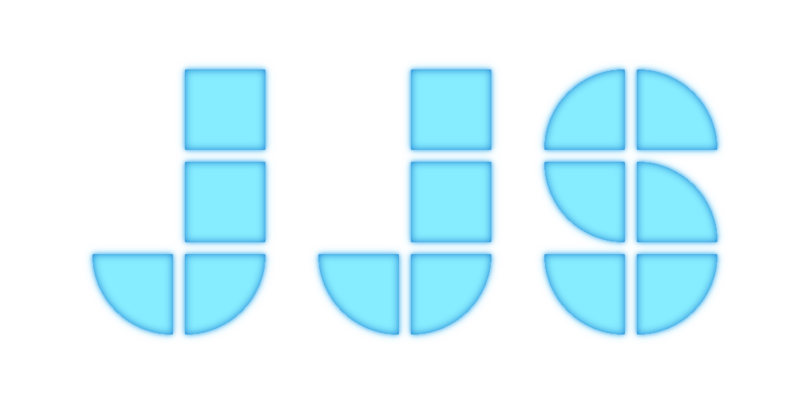

<div [class]="'app ' + getTheme()">
  <mat-sidenav-container [hasBackdrop]="isMobileView()">
    <mat-sidenav id="sidenav" #sidenav="matSidenav" [mode]="isMobileView() ? 'over' : 'side'" [opened]="isSideNavOpen"
                 (openedChange)="onSideNavOpenChange($event)">
      <div class="sidenav-content">
        <div *ngIf="!isMobileView()">
          
          <mat-divider></mat-divider>
        </div>
        <button mat-button class="menu-button" routerLink="/home" (click)="onNavItemClicked()">
          <mat-icon>home</mat-icon>
          <span>{{'app.home' | translate}}</span>
        </button>
        <button mat-button class="menu-button" routerLink="/profile" (click)="onNavItemClicked()">
          <mat-icon>person</mat-icon>
          <span>{{'app.profile' | translate}}</span>
        </button>
        <button mat-button class="menu-button" routerLink="/test" (click)="onNavItemClicked()">
          <mat-icon>bug_report</mat-icon>
          <span>{{'app.test' | translate}}</span>
        </button>
        <div class="spacer"></div>
        <mat-divider></mat-divider>
        <button mat-button class="menu-button" routerLink="/about" (click)="onNavItemClicked()">
          <mat-icon>info</mat-icon>
          <span>{{'app.about' | translate}}</span>
        </button>
      </div>
    </mat-sidenav>
    <mat-sidenav-content>
      <mat-toolbar>
        <button id="toggle-sidenav" mat-icon-button (click)="toggleSideNav()">
          <mat-icon *ngIf="!sidenav.opened">menu</mat-icon>
          <mat-icon *ngIf="sidenav.opened">close</mat-icon>
        </button>
        <div class="spacer"></div>
        <span class="title">JJSWare</span>
        <div class="spacer"></div>
        <button id="menu-button" mat-icon-button [matMenuTriggerFor]="menu">
          <mat-icon>more_vert</mat-icon>
        </button>
      </mat-toolbar>
      <div class="content">
        <router-outlet></router-outlet>
      </div>
    </mat-sidenav-content>
  </mat-sidenav-container>

  <mat-menu #menu="matMenu">
    <button id="language-button" mat-menu-item [matMenuTriggerFor]="languages">
      <mat-icon>language</mat-icon>
    </button>
    <button mat-menu-item (click)="switchTheme()">
      <mat-icon>{{ isDarkTheme ? "dark_mode" : "light_mode" }}</mat-icon>
    </button>
  </mat-menu>

  <mat-menu #languages="matMenu">
    <button id="{{language}}-button" mat-menu-item *ngFor="let language of getAvailableLanguages()" (click)="switchLanguage(language)">{{language |
      translate}}</button>
  </mat-menu>
</div>